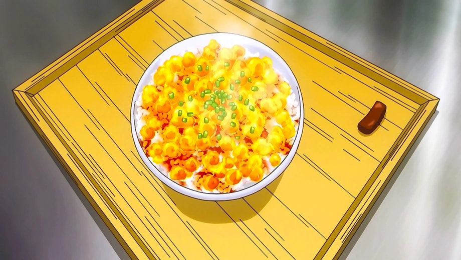
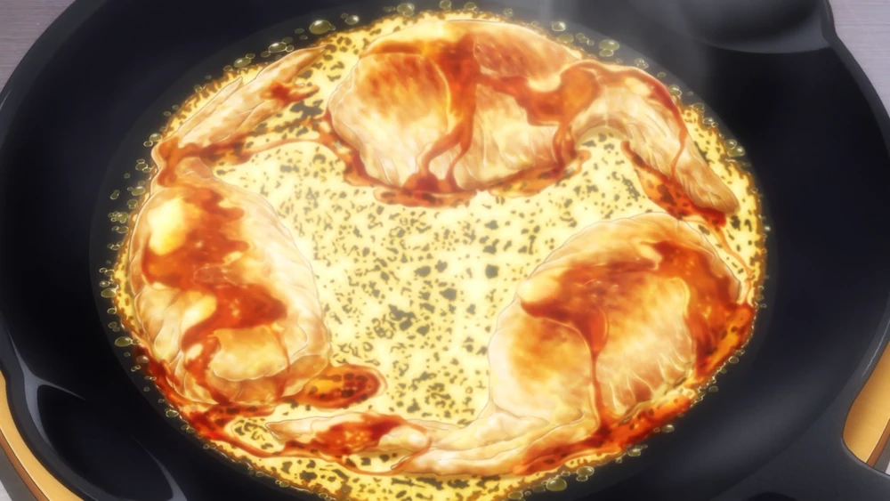

- Chaliapin Steak Don
- VIEW RECIPE
- Transforming Furikake Gohan 
- VIEW RECIPE
- Cheese Hanetsuki Gyoza 
- VIEW RECIPE

Chaliapin Steak Don is a dish made by Sōma Yukihira for his first Shokugeki against Ikumi Mito.
Transforming Furikake Gohan is a dish made by Sōma Yukihira for Erina Nakiri during his enrollment test at Tōtsuki Culinary Academy.
Cheese-Feathered Hanetsuki Gyōza is a dish made by Sōma Yukihira during his Shokugeki against Etsuya Eizan.